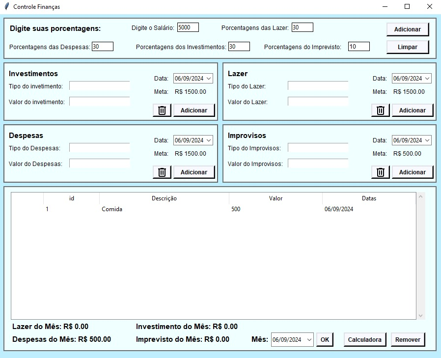

Projetos
◀
Aplicativo de Controle Financeiro - Python/Tkinter/SQLite
Criação de um aplicativo para gestão financeira, permitindo o controle de gastos e o planejamento de metas financeiras.
Uso de Python e banco de dados SQLite para armazenamento seguro e eficiente das informações.
 Veja o projetoPortfólio Online - HTML/CSS/JavaScript
Desenvolvimento de um portfólio online para apresentar meus projetos e habilidades. Inclui seções para projetos, currículo e contato.
Uso de HTML, CSS e JavaScript para criar uma interface responsiva e interativa.
 Veja o projeto
Veja o projeto
▶